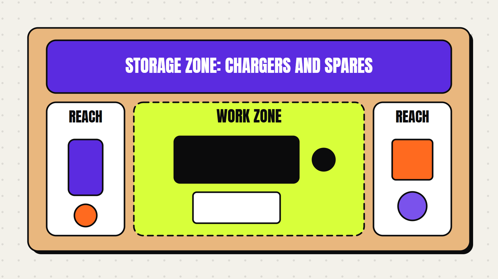
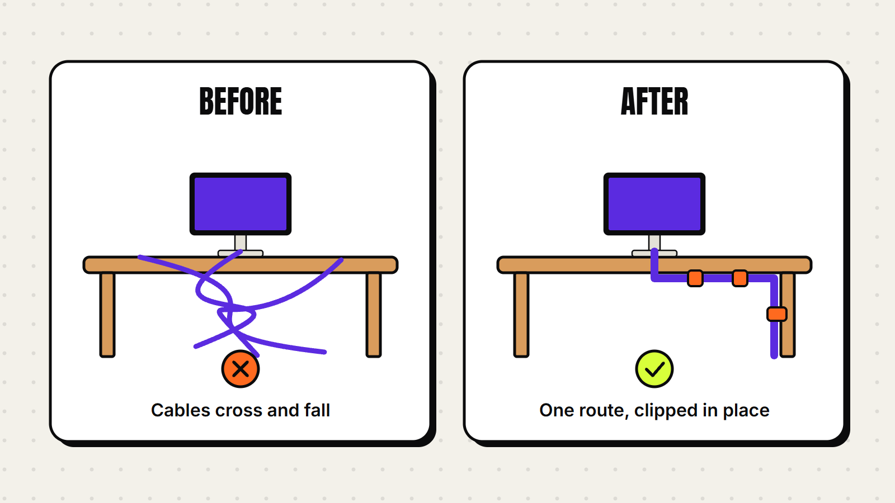

A tidy desk is not about owning less. It is about giving each thing a place you can reach without searching. 3D printed accessories help because they can be sized to your devices and your table. This guide shows how to plan a desk in zones, tame cables, and choose pieces that earn their space.
Start by removing everything from the desk. Put back only what you use daily, arranged by how often you reach for it.

Cables create most desk clutter. Handle them in this order:

Do not pinch or tightly coil power cables, and keep adapters where air can reach them.
| Accessory | Solves | Measure |
|---|---|---|
| Phone stand | Phone lying flat or lost under paper | Width with case, charging port position |
| Sticky note and pen holder | Loose notes and pens | Note size |
| Headphone and controller stand | Bulky items on the desk | Headband width and controller shape |
| Cable clips | Sliding cables | Cable diameter, desk thickness |
| Monitor shelf accessories | Small items near eye level | Shelf depth and edge |
| Under-desk hook | Headphones or bag off the surface | Desk thickness and weight |
Our ready-made range includes note and pen holders, a controller and headphone stand, and cable organisers. See the desk range.
Organisers should not push the screen too far or too close. A common guide is the top of the screen near eye level and about an arm's length away. Keep the keyboard where your elbows rest comfortably. An accessory that forces an awkward reach is not helping.
Choose one or two colours that match your desk, then use the same finish across pieces. A set looks calm even when it holds many things.
For a family or office desk, give each person a labelled tray. Removable organisers let one person clear the space quickly.
Take two minutes at the end of the day to return items to their places. Review the layout after a month and remove any holder you never use.
Tip: Photograph your desk from above with a ruler on it. Layout problems and measurements become clear at once.
Begin with an empty surface and a cloth. List every cable and what it powers. Decide where each charger should live, then measure the cable widths and the thickness of the desktop. Order or print clips first, since they deliver the biggest change for the least effort. Add stands and holders only after a few days of use show where your hands actually go. Leaving some bare space is a feature: it gives you room to work, and it makes the useful pieces stand out.
If you work from a small table that doubles as a dining surface, favour holders that lift off in one go, such as a single tray carrying the pen holder, notes, and phone stand together. Packing away then takes seconds.
Measure the cable's outside width at its thickest ordinary point, not the plug. If several cables share one clip, bundle them loosely and measure the bundle.
Removable mounting strips are gentler than strong tape, but any adhesive can mark soft finishes. Test in a hidden spot first.
A wide, open slot fits most phones with or without a case. If you change devices often, avoid a tight fitted cradle.
Leave slack in every cable so it can move through the full height, and run the bundle along a single flexible path. Check that nothing catches as the desk rises.
For most desks, a cable route and one home for small daily items change more than any number of ornaments.
Tidy should never mean cramped. Keep chargers and power strips where air can move around them, never cover them with papers or fabric, and do not run cables under rugs where damage goes unseen. Printed clips are for guiding low-voltage and device cables gently. Damaged mains leads should be replaced, not bundled out of sight.
When nothing off the shelf fits your device or table, send measurements and photos through the quote form, or ask our design service for a custom set.